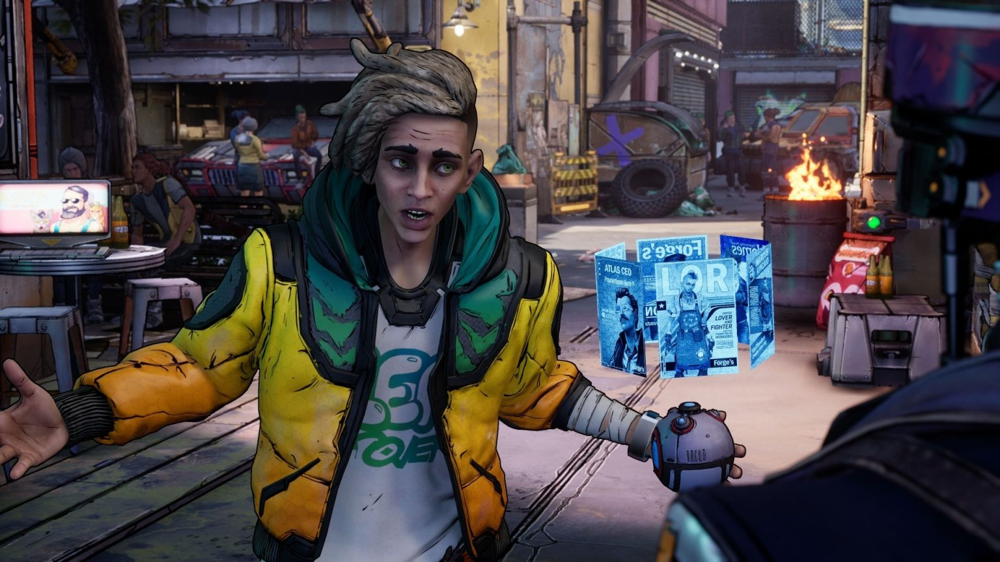
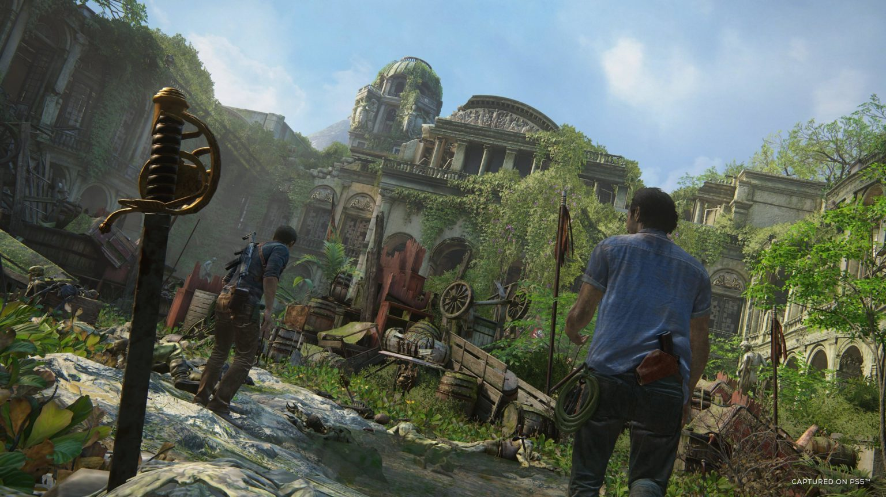
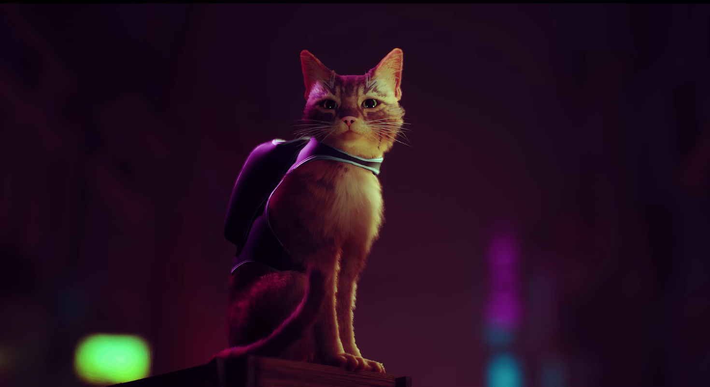
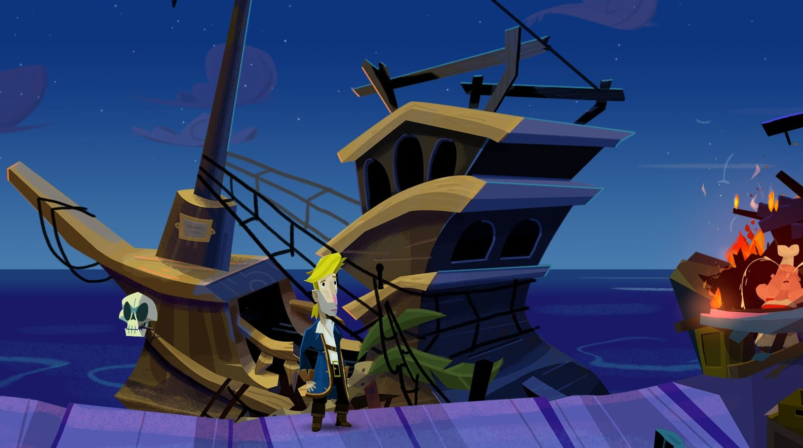
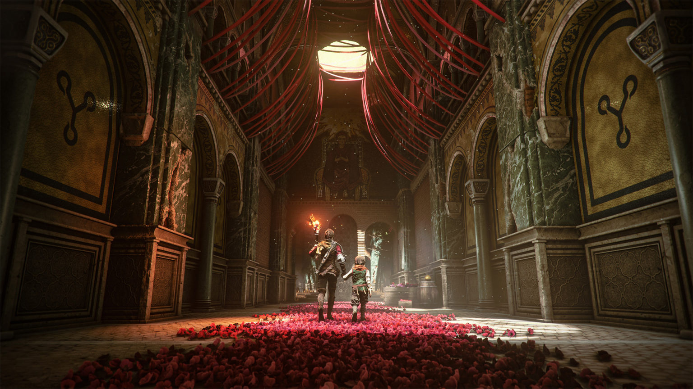

- Home
- About
- BY GENRE
- Top Action Games
- Top Adventure Games
- Top Casual Games
- Top Music Games
- Top Racing Games
- Top Roleplaying Games
- Top Simulation Anime
- Top Strategy Games
- BY PLATFORM
- Top PC Games
- Top Console Games
- Top Android Games
- Top iOS Games
TOP ADVENTURE GAMES

NEW TALES FROM THE BORDERLANDS
From the creators of the Borderlands franchise, New Tales from the Borderlands is a graphic adventure game set about three years after the events of Borderlands 3. On a planet controlled and ruined by massive corporate entities, you must guide the three protagonists on a quest to save the world and obtain the infamous Vault treasures.

UNCHARTED: LEGACY OF THIEVES COLLECTION
Play as Nathan Drake and Chloe Frazer in their own standalone adventures as they confront their pasts and forge their own legacies. This game includes the critically acclaimed single-player stories from both UNCHARTED 4: A Thief’s End and UNCHARTED: The Lost Legacy.

STRAY
Stray is a third-person cat adventure game set amidst the detailed, neon-lit alleys of a decaying cybercity and the murky environments of its seedy underbelly. Roam surroundings high and low, defend against unforeseen threats and solve the mysteries of this unwelcoming place inhabited by curious droids and dangerous creatures.

RETURN TO MONKEY ISLAND
Return to Monkey Island is the surprise addition to the point-and-click adventure series that sees the return of mighty pirate Guybrush Threepwood. You'll explore familiar places and encounter well-known faces once again, as Guybrush solves a host of puzzles and challenges to finally find the Secret of Monkey Island.

A PLAGUE TALE: REQUIEM
Following in the footsteps of its predecessor, A Plague Tale: Innocence, Requiem is a somber third-person action-adventure game that takes place in an alternate history version of 14th century France during the Hundred Years’ War. You play as Amicia, older sister to an afflicted and disturbed young boy named Hugo, and must travel through both beautiful and dystopian areas, run away from a tsunami of plague rats, and sneak or murder your way through an army of Inquisition soldiers all in the name of saving your brother.